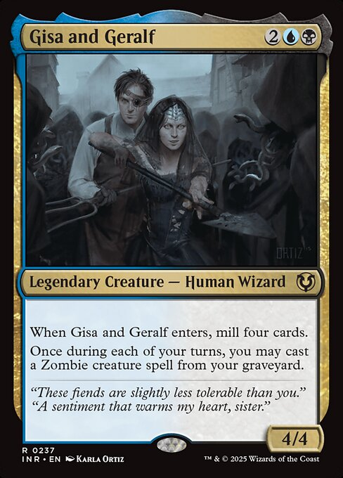
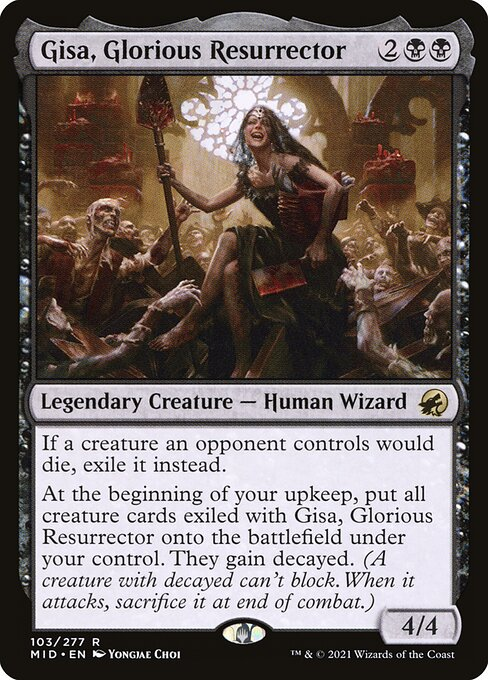
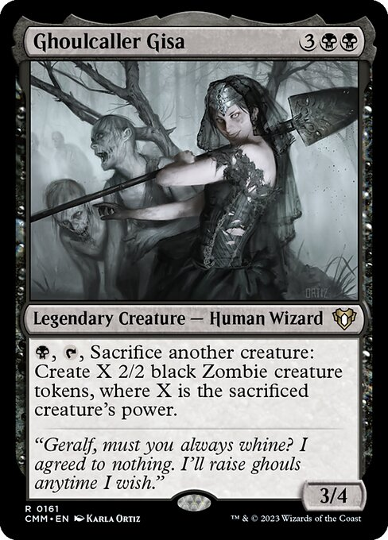

Gisa Cecani is a black-aligned necromancer from Innistrad who has fought an on-and-off zombie war with her twin brother Geralf for well over a decade of story time. Four cards show her under her own name, spanning 2014 to 2024: Ghoulcaller Gisa, Gisa and Geralf, Gisa, Glorious Resurrector, and Gisa, the Hellraiser.
Compiled 28 October 2026


Who she is
The MTG Wiki describes Gisa as “a beautiful but crazed woman who knows no restraint in proving that she is the best” — a pale young woman with dark hair and pale gray eyes. She and her twin brother Geralf are scions of a noble Thraben family and distant relatives of the former Lunarch Mikaeus Cecani.
Nature
A black-aligned necromancer called a ghoulcaller. She raises corpses directly from their graves as ghouls, a rawer and less formal craft than Geralf’s blue “stitcher” work building skaabs out of mismatched parts.
Craft
She can feel every dead and dying thing for miles around her. Individual ghouls answer to a whistle; calling a whole horde takes a full-throated song.
Family
Twin brother Geralf Cecani. Parents Geralf II and Gretchen Cecani, grandfather Geralf I Cecani, and cousin Mikaeus Cecani, a former Lunarch of the Avacynian church.
The rivalry
Gisa and Geralf have raised competing undead armies against each other on and off since their exile from Thraben — a running contest they themselves called “NecroWarfare.”
Status
As of the Outlaws of Thunder Junction story (2024), she has left Innistrad for Thunder Junction via an Omenpath, travelling with Geralf as part of Oko’s outlaw crew.
Her story
Gisa and Geralf’s feud runs through most of Innistrad’s major story arcs: a fire that got them exiled, a private “NecroWarfare” that escalated into a real siege, years of letters and petty one-upmanship, and two separate occasions where they dropped the feud to fight something worse together.
Exile and NecroWarfare GisaGeralf
The twins are banished from Thraben after a fire destroys the family manor; each blames the other in letters to their father, though both agree a reanimated zombie started the blaze. Exiled to the Moorland, Geralf takes Trostad (likely massacring those who did not flee), and Gisa attacks the town simply to best her brother, starting what they call “NecroWarfare.” Geralf drafts five formal rules — no spontaneous awakenings, no harming bystanders or livestock, scheduled bouts, three-limb minimums, headquarters off-limits — and adds a sixth, no magical swords, after Gisa gets hold of the cursed blade Bloodletter. She ignores his rules whenever it annoys him.
Geralf calls off NecroWarfare to besiege Thraben itself, inviting Gisa along with the promise of the ruined city once it falls. He sneaks in ahead of the attack and kills their cousin Mikaeus; Liliana Vess later raises Mikaeus’s corpse as a zombie to learn what she can from him. Gisa is left commanding the siege with Geralf’s skaabs added to her own ghouls, and the combined horde breaks the outer wall before the guardian Thalia scatters burning thatch and destroys most of the attackers. Gisa abandons the siege and is captured by the champion Odric, who imprisons her at Rider’s Lock.
Geralf sends a horde of skaabs to break Gisa out of Rider’s Lock, though she insists afterward that she didn’t need the help. She wants to restart the war, but Geralf is busy on what he calls his masterpiece under the alchemist Ludevic. Gisa retreats to their parents’ ruined manor, revives both parents as zombies, then sends her father back into the ground. She befriends the lithomancer Nahiri and supplies the ghouls used to build the Drownyard temple.
When Liliana Vess moves to raise a zombie army against the Eldrazi that have invaded Innistrad, Gisa and Geralf briefly set their rivalry aside to fight alongside her.
Two years after Emrakul’s sealing, Gisa takes over Liliana’s abandoned zombie army and claims Thraben’s ruins for herself, settling into the city’s least-destroyed building. She hasn’t heard from Geralf since and writes begging him to attack the city just to relieve her boredom; he refuses. Her undead suitor Wilhelt arrives seeking her acknowledgment as more than a pawn, and Gisa — more annoyed than moved — crushes his army and sends him away. She then writes to Geralf again, announcing she’s coming to live with him, “to his horror.”
Gisa moves into Geralf’s lab in Havengul, but he soon finds the arrangement too cramped and pushes her out; she takes over the Engelturm, a tower the angels left behind, and spends her time defiling their work and teasing Geralf by letter. She meets a compleated Phyrexian warrior and warns the vampire Jeleva off trying to devour her mind. When New Phyrexia invades Innistrad, Geralf writes to warn her and the siblings join forces again, defeating the invaders before returning, immediately, to their sibling rivalry.
The twins travel by Omenpath to the plane of Thunder Junction and join Oko’s outlaw crew, Geralf hired as medic and Gisa brought along as a case study in how interplanar travel affects spellcasters. During a train heist to extract the archaeologist Nolan, Gisa unleashes her zombies too early; the horde reaches the locomotive, eats the conductor, and sends the train careening over a broken bridge, though the gang survives and the extraction succeeds anyway. Later, hunting a map in the necropolis of Thief’s Folly, she triggers a trap that frees a zombie abomination; with help from the nomad Stella Lee, the siblings disable it and secure the map. The gang eventually corners their mysterious benefactor, who turns out to be Jace Beleren in disguise; he vanishes with the prize unpaid, leaving Gisa ready to team up with Oko again, next time for revenge.
This timeline rests on one primary source, the MTG Wiki’s Gisa Cecani page, which cites the original Wizards of the Coast story articles throughout. A secondary summary from MTGGoldfish’s Loreweaving column agrees on the fire, the exile, and the rivalry’s shape, with no contradictions found between the two.
Cards that depict her

First printed Commander 2014 · shown here Commander Masters, 2023
Ghoulcaller Gisa
{3}{B}{B}Legendary Creature — Human Wizard · 3/4 · rare
{B}, {T}, Sacrifice another creature: Create X 2/2 black Zombie creature tokens, where X is the sacrificed creature’s power.
“Geralf, must you always whine? I agreed to nothing. I’ll raise ghouls anytime I wish.”
Art: Karla Ortiz. Legal in Commander, Legacy, Vintage; not legal in Modern or Standard.
First printed Eldritch Moon, 2016 · shown here Innistrad Remastered, 2024
Gisa and Geralf
{2}{U}{B}Legendary Creature — Human Wizard · 4/4 · rare
When Gisa and Geralf enters, mill four cards.
Once during each of your turns, you may cast a Zombie creature spell from your graveyard.
“These fiends are slightly less tolerable than you.” “A sentiment that warms my heart, sister.”
Art: Karla Ortiz. Legal in Commander, Legacy, Vintage, Modern; not legal in Standard.
Innistrad: Midnight Hunt · 2021
Gisa, Glorious Resurrector
{2}{B}{B}Legendary Creature — Human Wizard · 4/4 · rare
If a creature an opponent controls would die, exile it instead.
At the beginning of your upkeep, put all creature cards exiled with Gisa onto the battlefield under your control. They gain decayed. (A creature with decayed can’t block. When it attacks, sacrifice it at end of combat.)
Art: Yongjae Choi. Legal in Commander, Legacy, Vintage, Modern; not legal in Standard.
Rulings note that returned creatures don’t get haste, that opponents’ “dies” triggers won’t fire since the exile replaces the death, and that decayed doesn’t force an attack — you can choose not to swing with a decayed creature at all.
Outlaws of Thunder Junction · 2024
Gisa, the Hellraiser
{3}{B}{B}Legendary Creature — Human Warlock · 4/4 · mythic
Ward—{2}, Pay 2 life.
Skeletons and Zombies you control get +1/+1 and have menace.
Whenever you commit a crime, create two tapped 2/2 blue and black Zombie Rogue creature tokens. This ability triggers only once each turn. (Targeting opponents, anything they control, and/or cards in their graveyards is a crime.)
Art: Chris Rahn. Legal in Commander, Legacy, Vintage, Modern and Standard.
The MTG Wiki also lists a handful of cards named for her rather than depicting her as the main subject — Gisa’s Bidding, Gisa’s Favorite Shovel, and the Ghoulcaller’s Accomplice / Chant / Harvest cycle — plus cameo appearances of her ghouls in art for other cards. Those aren’t treated as full depictions here.
Printings
Prices are single current lookups in USD. Ghoulcaller Gisa (Commander Masters #161) costs about $4.17 non-foil and $6.74 foil. Gisa and Geralf (Innistrad Remastered #237) costs about $0.43 non-foil and $0.50 foil. Gisa, Glorious Resurrector (Midnight Hunt #103) costs about $2.88 non-foil and $2.82 foil. Gisa, the Hellraiser (Outlaws of Thunder Junction #89) costs about $6.91 non-foil and $7.16 foil.
CMM · 161Reprint; first printed in Commander 2014. Art by Karla OrtizINR · 237Reprint; first printed in Eldritch Moon (2016)MID · 103Original printing. Art by Yongjae ChoiOTJ · 89Original printing. Art by Chris Rahn
Card
Set
No.
Note
Ghoulcaller Gisa
Commander 2014
23
First printing (2014)
Ghoulcaller Gisa
Commander Masters
161
Reprint shown above (2023)
Gisa and Geralf
Eldritch Moon
—
First printing (2016)
Gisa and Geralf
Innistrad Remastered
237
Reprint shown above (2024)
Gisa, Glorious Resurrector
Innistrad: Midnight Hunt
103
Original printing (2021)
Gisa, the Hellraiser
Outlaws of Thunder Junction
89
Original printing (2024)
The card-data tool returns one entry per card, not a full printing list, so I cross-checked first printings and original collector numbers against Scryfall through the browser (Scryfall blocks direct automated requests). Other treatments — showcase frames, foils, promos — may exist beyond what’s listed here.
Playing her as a commander
All four of her solo and paired cards can lead a Commander deck. Gisa and Geralf is the most played, leading 8,022 decks on EDHREC, almost all built around the zombies theme (843 decks) with reanimator (534) and graveyard (296) close behind. Gisa, the Hellraiser is the most popular solo build at 6,121 decks, again led by zombies (435), tokens (308) and the crime mechanic she shares with the rest of Thunder Junction (234). Gisa, Glorious Resurrector trails at 1,663 decks, mostly aristocrats and reanimator builds; Ghoulcaller Gisa is the oldest and smallest of the four. EDHREC counts decks of every pod size, not 1v1 specifically.
Share of Gisa, the Hellraiser decks that play each card
Death Baron73.5%
Cemetery Reaper66.8%
Jet Medallion66.5%
Undead Augur65.4%
Feed the Swarm64.6%
Source: EDHREC data, retrieved through a card-data tool on 28 October 2026.
What could not be confirmed
Where the feud goes next. The MTG Wiki says the siblings’ future story “is not yet confirmed” as of the Thunder Junction heist. The dotesports coverage I found adds nothing past that point.
Associated-but-not-depicting cards. I could not confirm whether Gisa’s Bidding, Gisa’s Favorite Shovel, or the Ghoulcaller’s cycle actually show her likeness or are simply named for her, so they’re noted but not given full entries above.
Exact wording of the siege and heist chapters. I read the MTG Wiki through a page-reading tool rather than the original Wizards story articles it cites, so check direct quotes against the source stories before relying on exact phrasing.
Prices and printings. Single lookups taken on one day; the printing list above may not be exhaustive.
Scryfall blocks direct automated requests, so oracle and flavor text came from a card-data tool, cross-checked against Scryfall pages loaded in a browser.